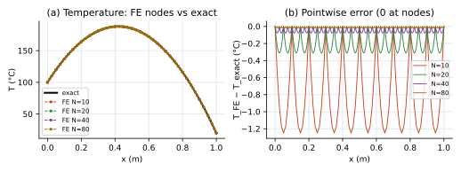
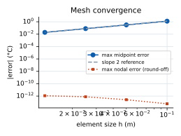
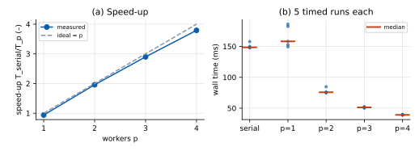
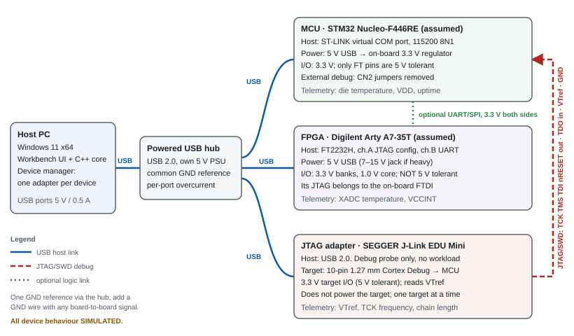
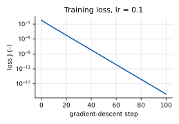

Architecture. A C++17 core library (src/core: thermal FEA, batch pool, STL/CSV parsers, backprop, device mocks, CSV/JSON writers) has no UI or network dependency and is unit-tested directly. A thin transport layer (src/app) uses cpp-httplib to serve the UI and map /api/* to core calls on 127.0.0.1 only (cross-origin requests refused). Launch.exe starts that server on a free port, opens the default browser and shows a small “running / stop” window. A CLI (uew_cli) drives the same core to regenerate every file in results/.
Why a browser UI. three.js gives robust 3D interaction (rotate, pan, zoom, picking) with little code, and Edge ships with Windows 11. Libraries and fonts are vendored, so nothing is fetched at runtime.
One-click delivery. Static linking (MinGW-w64 GCC 16.2, -static) means Launch.exe imports only Windows system DLLs — no VC++ redistributable, installer, admin rights or first-run build. Logs: logs/workbench.log. Measured launch-to-server-ready 28–61 ms and launch-to-UI-ready 1.35–1.45 s including browser start, over several runs (log in Appendix B).
Responsiveness and safe completion. The benchmark runs as a job on its own thread; the UI polls progress (completed solves / total, stage) every 250 ms and can cancel. Workers check an atomic flag between solves; a cancelled or failed job publishes nothing, so the previous result stays intact. Only one compute job runs at a time (HTTP 409 otherwise) so timings are not disturbed.
Errors. Exceptions map to HTTP 400 (bad input, with parameter or file line), 409 (state), 500; the UI shows the message next to the field and in an aria-live status bar.
One page with five keyboard-accessible tabs (WAI-ARIA tab pattern): Geometry, Thermal Analysis, Performance, Hardware, and Backprop check. Inputs have visible labels with units, client-side checks for instant feedback and authoritative C++ validation; plots have titled axes with units and legends; exports are CSV/JSON. UI rules from the ui-ux-pro-max checklist: ≥44 px targets, visible focus rings, 16 px base text, viridis (colour-blind-safe) colour map, reduced-motion respected, keyboard camera buttons and a hottest/coldest-node text summary as the non-visual fallback for the 3D view.
| Test suite (all pass on the submitted build) | Checks | Covers |
|---|---|---|
ctest — tests/test_core.cpp + sample files | 31 | Numerical (BCs, nodal exactness, midpoint error = qh²/8k, order 2, energy balance, gradients vs FD), positive and negative parsing (NaN, Inf, text, extra/missing column, duplicate id, binary STL, quad facet, truncation, empty), pool agreement/order/cancel/exception propagation, NaN-safe agreement, job registry busy/cancel/failure, device timeout recovery |
tests/api_smoke_test.py | 31 | Every HTTP route, 13 malformed fixtures → 400, concurrent job → 409, cancel → no result, cross-origin and DNS-rebinding → 403 |
tests/e2e_walkthrough.py (Playwright + Edge) | 12 | Full UI flow incl. node inspection, error display, UI responsive during benchmark, cancel, device recovery; no console errors; produces the screenshot walkthrough (Appendix B) |
scripts/file_size_test.ps1, tests/upload_size_test.py | 11 | Tested limits: 500k-triangle STL (118 MB) 2.2 s end-to-end; 2M-node CSV 5.4 s; 2,000,001 nodes rejected |
Formats. ASCII STL (strict grammar, exactly three finite vertices per facet; binary STL detected and explained) and nodal CSV node_id,x_m,y_m,z_m,temperature_C (exact header, five fields, positive unique ids, finite values, T ≥ −273.15 °C; BOM/CRLF tolerated). Errors name the line and value, e.g. “Line 3: temperature_C value 'NaN' is not a finite number”. Samples (data/PROVENANCE.md): a self-created 60×40×36 mm heat-sink STL (64 triangles, millimetres) and a synthetic 1065-node temperature field on the same geometry from a fin-equation formula — labelled synthetic, not an ANSYS export. The viewer converts STL units (mm/m/in) to metres so both overlay; nodes are coloured with a °C legend and can be clicked to show id, x/y/z (m) and T (°C).
Problem. −d/dx(kA dT/dx) = qA on 0 < x < L with L = 1 m, A = 10−4 m², k = 10 W/(m·K), q = 104 W/m³, T(0) = 100 °C, T(L) = 20 °C. Assumptions: steady state, constant k, A, q, insulated lateral surface (heat leaves only through the ends), 1D. SI units; °C and K are interchangeable because only differences enter.
Formulation. Weak form ∫kA T′v′dx = ∫qA v dx with two-node linear elements of length h = L/N gives element matrices ke = (kA/h)[1 −1; −1 1] and fe = (qAh/2)[1; 1], assembled into a symmetric tridiagonal system. Boundary conditions: for each prescribed node p, K(j,p)·Tp is moved to the neighbour’s right-hand side, row and column p are zeroed and K(p,p) = 1, F(p) = Tp (symmetry preserved). Solved by the Thomas algorithm, O(N). The FE error is evaluated at element midpoints with FE interpolation (Te + Te+1)/2 against Texact(x) = 100 − 80x/L + [q/(2k)] x(L − x).

results/thermal/thermal_nodes.csv, thermal_error_profile.csv.| N | h (m) | max nodal err (°C) | max midpoint err (°C) | order |
|---|---|---|---|---|
| 10 | 0.1 | 5.7e−14 | 1.250000 | – |
| 20 | 0.05 | 2.6e−13 | 0.312500 | 2.000 |
| 40 | 0.025 | 7.7e−13 | 0.078125 | 2.000 |
| 80 | 0.0125 | 1.1e−12 | 0.019531 | 2.000 |
Analytical check. Linear interpolation of a parabola of curvature −q/k errs by (q/k)h²/8 at the midpoint: 104·0.1²/80 = 1.25 °C for N = 10, matched to 10−12; halving h divides it by 4 (order 2.000). Energy balance: nodal reactions give 0.42 W out at x = 0 and 0.58 W at x = L, total 1.000 W = qAL (= ±kA dT/dx of the exact solution).

thermal_convergence.csv).Debugging insight. Measured only at the nodes, the error is ~10−13 for every mesh and does not converge — it looks like a broken test. In 1D with linear elements the FE solution is nodally exact (the Green’s function of −d²/dx² is piecewise linear, so it lies in the FE space); all discretisation error is between nodes, which is why the midpoint metric is required. The nodal error even grows slightly with N: that is floating-point round-off over more unknowns, not discretisation error. Learning: see docs/thermal_fea.md {{LEARNING_NOTE}}
Workload. Reproducible batch: seed 20261101, 400 independent rods, N = 20,000 elements each (8 M unknowns per pass); k ~ U[5, 50] W/(m·K), q ~ U[103, 5×104] W/m³, other data as Task C. The generator maps raw mt19937_64 output (fully specified by the C++ standard) to [0,1) itself, because uniform_real_distribution is implementation-defined and would give different cases on other compilers. Methods. Serial loop vs a bounded pool of p std::threads (p = 1–4, capped at logical CPUs) taking case indices from an atomic counter; each result is written to its own slot, so output order equals input order. Both use the identical solver. Timing. 1 untimed warm-up of each variant, then 5 timed repetitions; steady_clock wraps only the solve loop (case generation, result allocation, file I/O and rendering excluded). Agreement: every value of every pool run is compared with the serial reference; max |ΔT| must be ≤ 10−8 °C. Output buffers are NaN-filled before each run so a slot that was not rewritten would fail the check.
| CPU | 13th Gen Intel Core i7-13650HX (hybrid: 6 P-cores + 8 E-cores), 14 physical / 20 logical | RAM | 23.8 GiB |
|---|---|---|---|
| OS | Windows 11 25H2 (build 26200), Balanced power plan, on AC | Compiler | GCC 16.2.0 (MinGW-w64), -O3 -DNDEBUG -static |
| variant | median (ms) | speed-up T1/Tp | efficiency | max |ΔT| (°C) |
|---|
T1 = serial median. Agreement: {{AGREEMENT}}, because each case runs the same instructions regardless of thread. Raw samples: results/performance/benchmark_samples.csv.

SetProcessInformation(ProcessPowerThrottling) and changing nothing else made 20/20 p = 4 samples 38–40 ms. Evidence: results/performance/allocation_contention_before_after.md.Overheads and limitations. Pool p = 1 differs from the plain loop by {{P1_DELTA}} (thread start/join, the atomic counter and lost inlining cost a little; run-to-run noise is of similar size). Efficiency is {{EFF2}} at p = 2 and {{EFF4}} at p = 4. What would erode it at higher p: each solve streams ~640 kB through memory (shared bandwidth), threads land on mixed P- and E-cores, and the last few cases leave workers idle; the cases are many and equal-sized, so load balance is good. Serial samples ranged {{SERIAL_RANGE}} ms in this run; earlier runs varied up to ±20 % (a lone thread migrating between P- and E-cores), so medians of five are reported. Results are specific to this laptop; no claim is made for other hardware, and p > 4 was not measured by design.

| Link | Connector / signals | Voltage | Level shifting | Ownership / notes |
|---|---|---|---|---|
| Host ↔ hub ↔ boards | USB 2.0; Mini-B (Nucleo ST-LINK), Micro-B (Arty FT2232H), Micro-B (J-Link) | 5 V VBUS | n/a | Powered hub so three boards do not overload a laptop port; per-port overcurrent. |
| Nucleo-F446RE power, I/O | USB 5 V → on-board 3.3 V regulator; VCP = USART2, 115200 8N1 | 3.3 V (FT pins 5 V tolerant) | – | Telemetry via virtual COM port. |
| Arty A7-35T power, I/O | USB 5 V (7–15 V jack for heavy designs); FT2232H ch.A JTAG, ch.B UART | 3.3 V banks, 1.0 V VCCINT | – | Not 5 V tolerant. Its JTAG is owned by the on-board FTDI. |
| J-Link → Nucleo MCU | 10-pin 1.27 mm Cortex Debug via 2×5 breakout to Morpho: PA13 TMS/SWDIO, PA14 TCK/SWCLK, PA15 TDI, PB3 TDO/SWO, NRST, VTref, GND | 3.3 V | None (3.3 V probe, 3.3 V target) | Probe drives TCK, TMS, TDI, nRESET; target drives TDO and supplies VTref. Remove Nucleo CN2 jumpers to release the on-board ST-LINK. One probe per TAP. |
| Optional MCU ↔ FPGA | USART1 PA9/PA10 ↔ Pmod JA 1/2 + GND wire | 3.3 V ↔ 3.3 V | Not needed; 100 Ω series R. A 5 V MCU would need e.g. TXS0108E | Artix-7 I/O are not 5 V tolerant. |
| Grounding | Single reference through the hub; a GND wire with every board-to-board signal; no second earthed supply path without checking for ground loops. | |||
Pinout assumptions to verify against ST UM1724, the Digilent Arty A7 reference manual and SEGGER UM08001 before any wiring; they have not been checked on hardware. Why the JTAG adapter is not a compute board: it is a debug interface that shifts bits through a target’s Test Access Port to halt the CPU, read/write memory, program flash or load a bitstream. It runs no workload, does not power the target, and only works with a specific target, voltage (VTref) and pinout. The three devices share neither connector (Mini-B / Micro-B / 10-pin), protocol (UART, JTAG/SWD, JTAG-over-FTDI) nor core voltage (3.3 V vs 1.0 V), so the software models three device types, not interchangeable boards.
C++ mocks (src/core/hardware.*): a DeviceAdapter interface (discover, capabilities, connect/disconnect, one TelemetryFrame message type) with MCU, FPGA and JTAG implementations, plus a DeviceManager that retries a read up to three times on a (simulated 250 ms) timeout. Recoverable failures shown in the UI: a transient timeout recovers on attempt 2; a persistent fault exhausts retries, sets the device to error, refuses reads, and Reconnect recovers it. Every response carries simulated: true and every UI state reads “(simulated)”. Safe integration plan: confirm the table from manuals → power each board alone and measure rails → replace one mock at a time behind the same interface (Win32 COM port; SEGGER SDK) → wire J-Link unpowered, GND first, check VTref = 3.3 V, start with a read-only IDCODE scan → board-to-board link last, with series resistors → ESD strap, no hot-plugging the debug cable. Limitations: no real enumeration, serial, JTAG, firmware or bitstream operations; telemetry is synthetic.
x = 1, y = 2, h = tanh(wx + b), ŷ = vh + c, J = ½(ŷ − y)², start w = 0.5, b = 0, v = 1, c = 0, η = 0.1. The handwritten derivation is Appendix A. The C++ implementation (src/core/backprop.cpp) writes every derivative by hand (no autodiff):
| θ | ∂J/∂θ (chain rule) | central diff. (ε = 10−6) | |error| | after 1 step |
|---|---|---|---|---|
| w | −1.209464475 | −1.209464475 | 1.1e−10 | 0.620946448 |
| b | −1.209464475 | −1.209464475 | 1.1e−10 | 0.120946448 |
| v | −0.710682047 | −0.710682047 | 5.3e−11 | 1.071068205 |
| c | −1.537882843 | −1.537882843 | 1.1e−10 | 0.153788284 |
Forward: z = 0.5, h = 0.462117157, ŷ = 0.462117157, J = 1.182541819. All errors ≤ 10−5 (pass). All gradients are negative because ŷ < y and raising any parameter raises ŷ, so descent increases all four; c moves most (∂ŷ/∂c = 1), w and b least (scaled by v(1 − h²) = 0.786).

backprop_loss.csv).The loss falls from 1.18 to 0.686 after one step, 1.0×10−2 at step 10 and 1.7×10−20 at step 100: a roughly constant factor (~0.6) per step, i.e. linear convergence, straight on a log axis. It reaches zero because one sample with four free parameters can be fitted exactly — this shows the optimiser works, not that the model generalises.
| Requirement | Evidence (in the ZIP) |
|---|---|
| One-click launch, editor config | Launch.exe; .vscode/tasks.json (built-in task) and launch.json (needs ms-vscode.cpptools); evidence/launch_exe_dll_dependencies.txt |
| Source build | CMakeLists.txt, CMakePresets.json, README §5; docs/dependencies.md (pinned versions, licences, SHA-256) |
| Raw data and plots | results/thermal|performance|backprop/*.csv|json, results/plots/*.svg|png (plots drawn only from C++ output) |
| Walkthrough with logs | evidence/walkthrough/*.png + walkthrough_log.txt (Appendix B) {{VIDEO_NOTE}} |
| Version control | evidence/git/repository.bundle (git clone repository.bundle), commit_log.txt (Appendix C) |
| AI use, ownership, effort | docs/ai_use_log.md (12 groups of incorrect AI output found and fixed), docs/ownership_statement.md, docs/effort_log.md |
Claude Code (Claude Opus 5.5) generated most code and documentation drafts under my direction; an earlier ChatGPT prototype was used only as a reference. Verification was independent of the AI: closed-form theory, finite differences, 85 automated checks and repeated measurements. The most consequential AI errors were performance-related (per-solve allocation; unrecognised power throttling) and were caught only by measuring; others included a NaN-blind agreement check, an 8 KB upload limit, a wrong probe-voltage assumption and first-person drafts describing experiences I had not had. Full log with verbatim prompts: docs/ai_use_log.md.